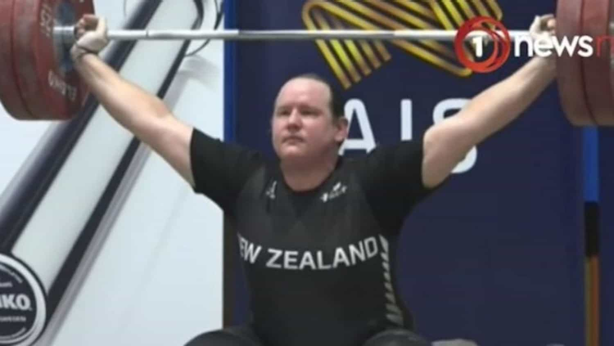
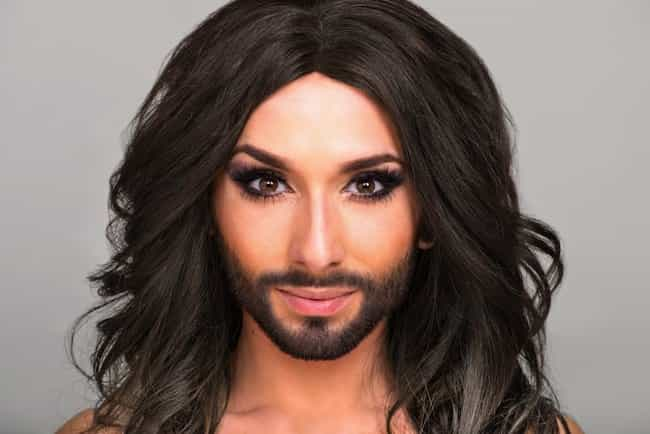

“Hannah” Mouncey, a 220-pound, 6’3″ transgender “woman,” has recently been excluded from playing in the female version of the Australian Football League (AFL). Australian rules football, for those who have never seen it, is somewhat like the bastard child of soccer and rugby, combining kicking and tackling. It is most popular in the southeastern state of Victoria, which includes the city of Melbourne.
The exception is to ensure players don’t have an unfair competitive advantage in single-sex competitions where the strength, stamina or physique of players is relevant.
— Australia’s Sky News explaining how Hannah Mouncey was banned using the laws of the state of Victoria because she would be too damn good against female players
Despite constant reassurances from SJWs that transgender women are indeed “real” women, the powers that be ruled that Mouncey would be far too good compared to the so-called cis-gender female players. Normally, testosterone levels are the benchmark for whether a transgender woman can participate in a female sporting field. Having fallen below the maximum permissible levels of the male hormone, Mouncey nevertheless received a ban from the sport’s governing body.
Female sport needs to be continually protected, not just from men, but also men trying to be women. The Victorian Equal Opportunity and Human Rights Commission specifically prepared for the risks of transgender women outclassing biological women, allowing the former to be excluded if they would cream the female players.
The decision has been made more hilarious because Mouncey only seems to have properly taken up the sport of Australian rules football in the last couple of years. Before injecting loads of female hormones, the player represented Australia in men’s handball. Whilst this is quite an achievement, handball is close to the least popular mainstream sport in the country and is hardly analogous to Australian rules football.
Watch as the SJWs eat each other

If Garry Shandling had had a transgender baby, it would have been New Zealander weightlifter “Lauren” Hubbard.
I went to university in Melbourne for one of my degrees. Even compared to Sydney, which has the most extreme small-scale leftist hotspots, Melbourne is the country’s SJW capital overall. Still, there are occasions where tussles between privileged groups, like real women and transgenders, lead to disputes that are only temporarily resolved by one group shitting on the other. In this case, women with vaginas won.
Predictably, The Guardian has been super-pissed at the decision to boot Hannah Mouncey from contention. Meanwhile, those more interested in advocating the lie that women’s sport is as good as men’s (by very strictly keeping the sexes from competing side-by-side) appear to support it.
Australia’s nemesis New Zealand is also increasingly befuddled by the transgender sports issue. Unlike Hannah Mouncey, though, our sheep-loving neighbor backed the dick-removing side. A deeply troubled Kiwi man (or budding, self-sacrificing shitlord) opted to “become” a woman and then proceeded to smash the competition in weightlifting earlier this year. God knows the sort of intra-SJW wars we will gleefully witness when this fabulous new craze fully hits North American and European shores.
There is no rhyme or reason to leftist madness

“Which penis-less group do we support more today?”
You know the fall is coming if the SJWs really can’t decide who amongst their pet groups to preference and why. As I said, the biological women won this time around concerning Hannah Mouncey. Yet the next victory in Australia or elsewhere will probably be chalked into the transgender column. And so the madness continues.
We live in a sad but interesting period. Amidst the braindead social experiments of the 2000s and 2010s, every once in a while we see developments that bring smiles to our faces. Leftists squabbling over which pecker-less demographic gets the reward of the day is always going to be one of those instances.
Read More: How Social Justice Warriors Ruined Australian Football